📥 Importing Data
Import posts, pages, custom post types, users, WooCommerce products, and any MySQL table data from CSV files.
Supported Content Types
- Posts, Pages, and Custom Post Types (CPTs)
- Taxonomies and Terms
- Users and User Meta
- Comments
- Navigation Menus
- Raw MySQL Tables
- WooCommerce Products, Orders, Coupons
- Advanced Custom Fields (ACF)
- Yoast SEO Meta
Supported File Formats
- CSV — Standard comma-separated values with streaming support for large files
- UpdraftPlus — most widely used; supports cloud storage (Google Drive, Dropbox, S3)
- All-in-One WP Migration — simple one-click backup & restore
- BackWPup — scheduled backups to cloud or local storage
- Duplicator — backup, migrate, and clone your site
- Jetpack (VaultPress Backup) — real-time cloud backups by Automattic
Import Workflow
Step 1 — Select Content Type
Navigate to Amplified Import Export → Import in the WordPress admin sidebar. Select the content type you want to import — for example, Pages.
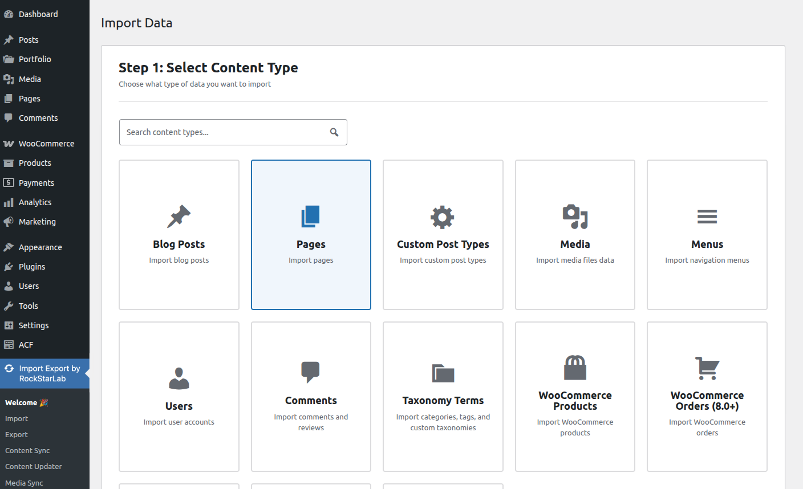
Once you have selected the content type, click Next Step to proceed.
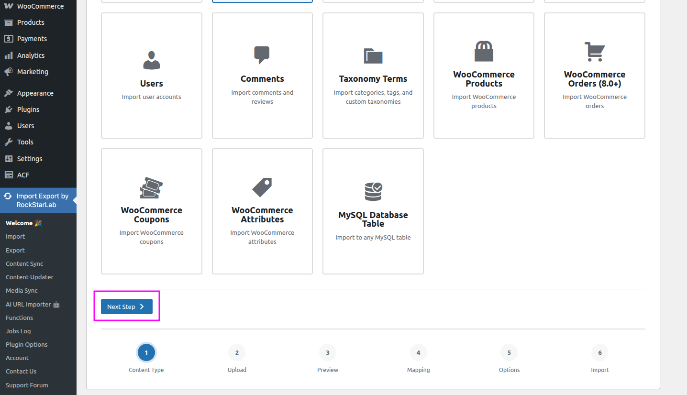
Step 2 — Upload Import File
Select the file that contains the data you want to import. Click the upload area or drag and drop your CSV file onto it.
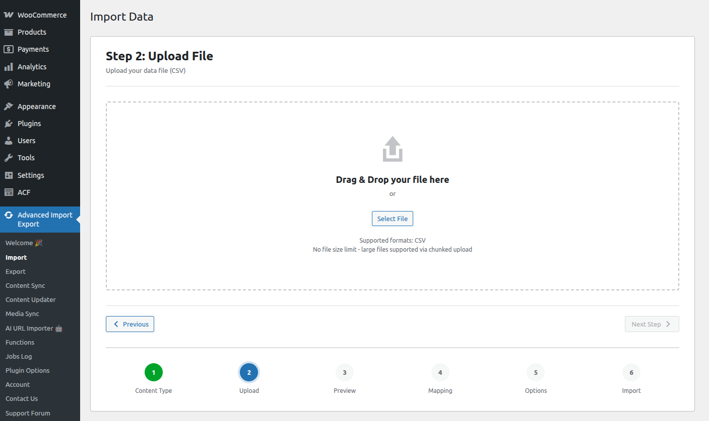
If needed, configure the delimiter used in your file — for example, a comma
,, semicolon ;, or tab. This should match the separator used in your CSV file.
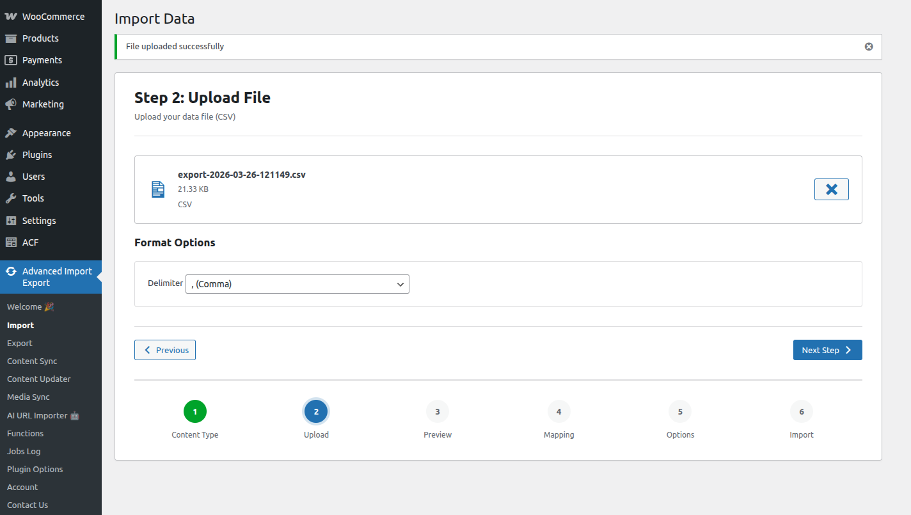
Once the file is uploaded and the delimiter is set, click Next Step to proceed.
Step 3 — Preview Data
This screen displays a preview of the data parsed from your file. Only the first 5 rows of the import file are shown, so you can quickly verify that the data was read correctly before proceeding with the full import.
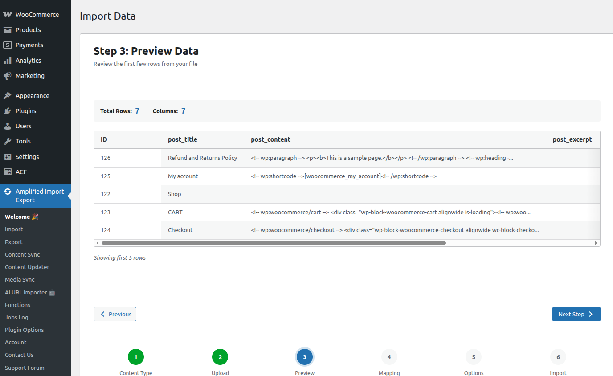
If the data looks correct, click Next Step to continue.
Step 4 — Field Mapping
On this step you map the columns from your CSV file to the corresponding WordPress content fields. Click Auto Map and the plugin will automatically match column names to the available fields.
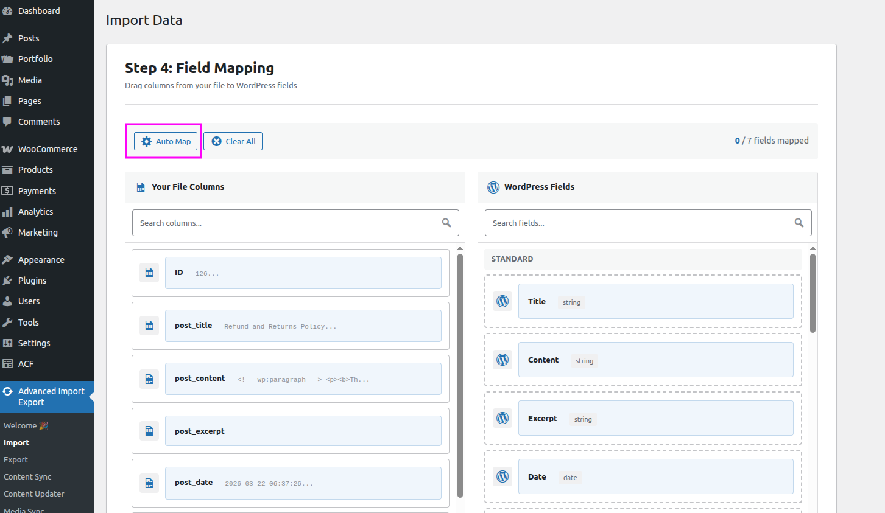
Review the mapped fields and make any corrections if needed. To map a field manually, drag it from the left panel (CSV columns) and drop it onto the corresponding field in the right panel (WordPress fields).
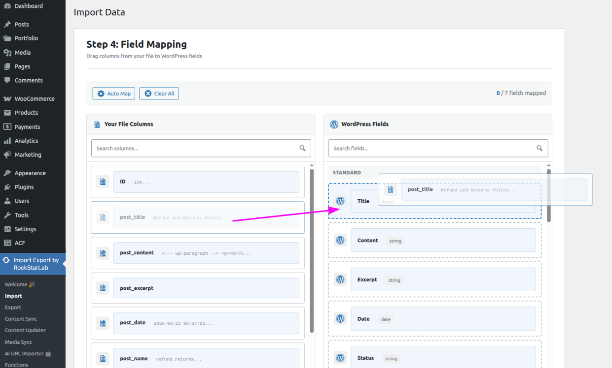
At the bottom of the screen you will see a summary list of all currently mapped fields.
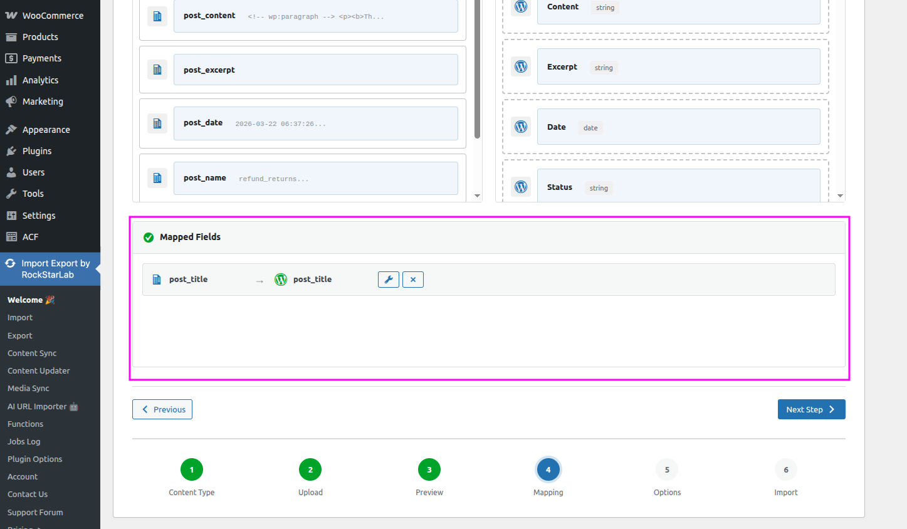
Transformation Functions
Optionally, you can assign a transformation function to any mapped field. The function will be applied to each value during import — for example, converting all post titles to uppercase before they are saved to WordPress.
To assign a function, click the wrench icon next to a field and select the desired functions from the list.
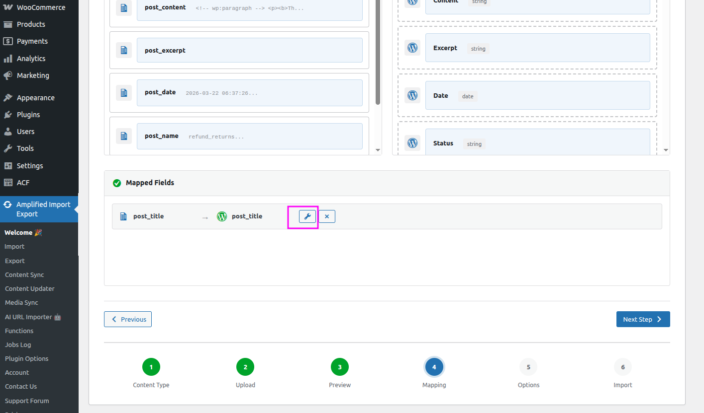
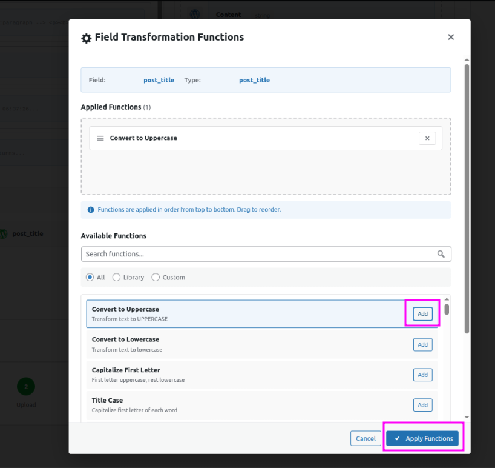
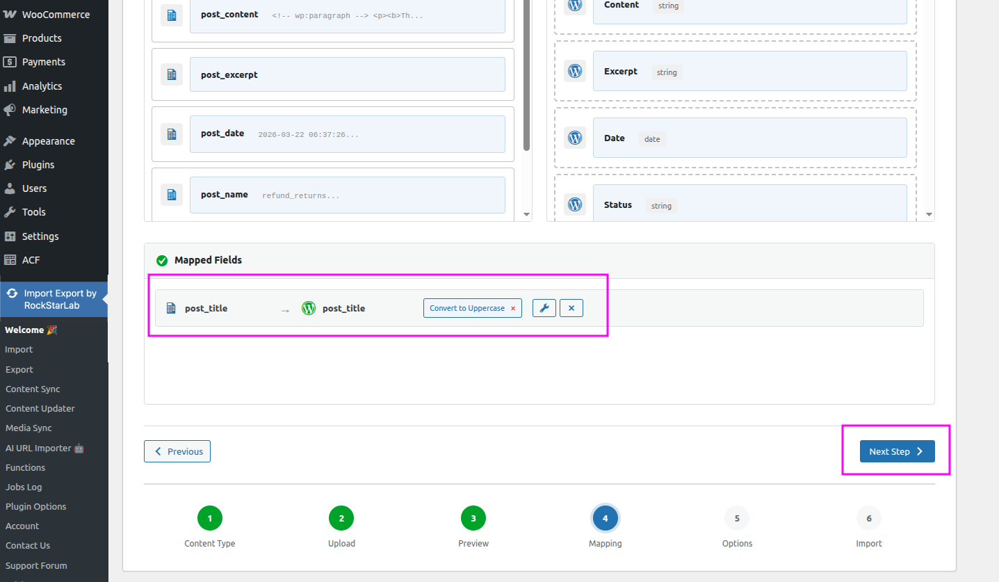
When you are done mapping fields and assigning functions, click Next Step to proceed.
Step 5 — Import Options
This screen lets you configure additional options that control how the import behaves when processing your data.
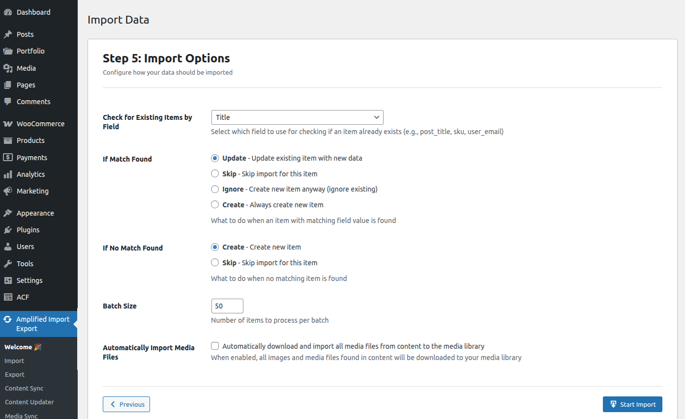
| Option | Description |
|---|---|
| Check for Existing Items by Field |
Select which field to use when checking whether an item already exists in WordPress —
for example, post_title, sku, or user_email.
This prevents duplicate records from being created.
|
| If Match Found |
Defines what to do when an existing item is found that matches the check field:
|
| If No Match Found |
Defines what to do when no existing item matches the check field:
|
| Batch Size | The number of records processed per batch. Lowering this value can help avoid timeouts or memory issues on servers with limited resources. |
| Automatically Import Media Files | When enabled, the plugin will automatically download and import all media files found in the content (images, attachments, etc.) directly into your WordPress Media Library during the import process. |
Once you have configured the options, click Start Import to begin the import process. The plugin will process your records in batches and display real-time progress.
Step 6 — Import Results
Once the import is complete, you will see a results summary showing how many records were created, updated, skipped, and whether any errors occurred during the process.
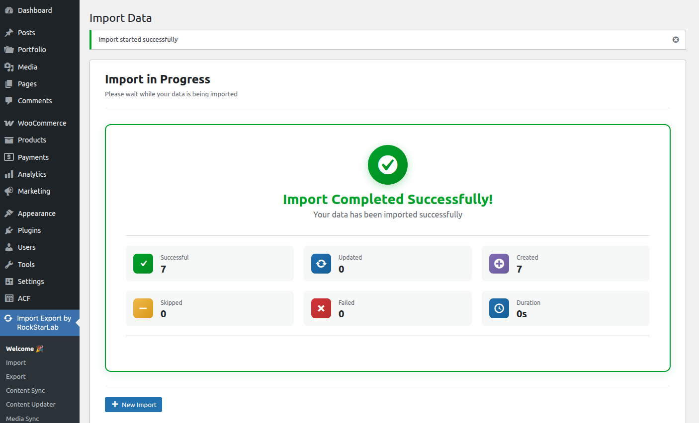
← 🔑 License Activation 📤 Exporting Data →